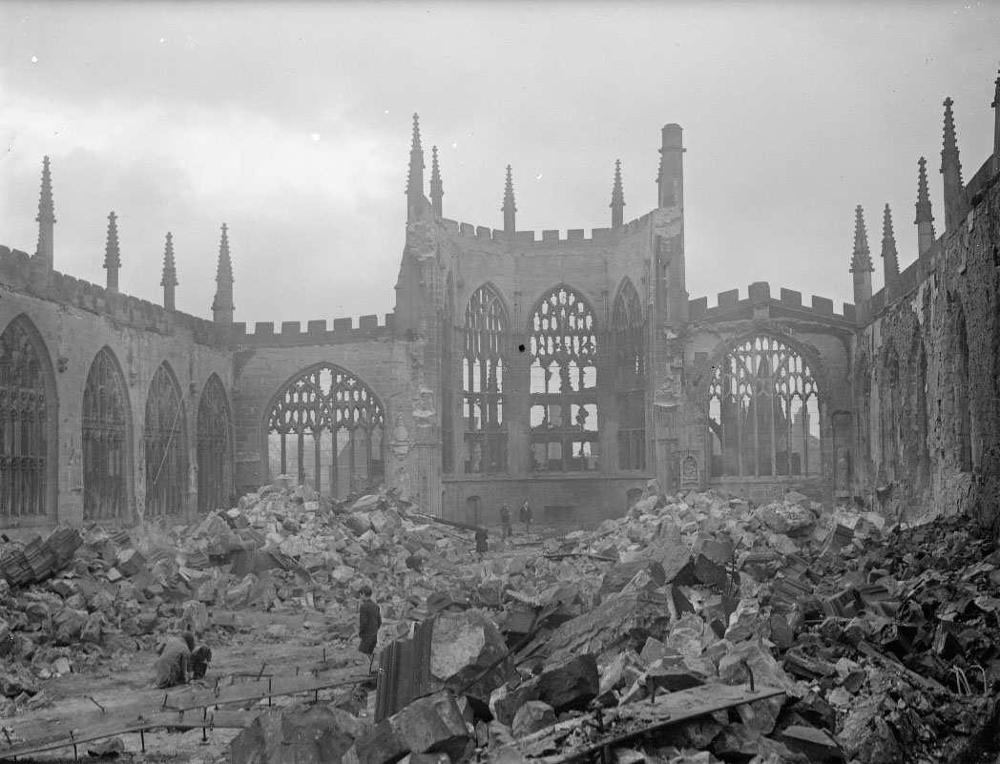

Storia
Coventry

Nel libro "The Ultra Secret" scritto dal colonnello della RAF, si evince che il governo britannico era venuto
a conoscenza dei piani tedeschi per Coventry grazie alle misure messe in atto dagli specialisti di crittoanalisi.
Però Churchill, informato dell'imminente raid, diede ordine di non predisporre alcuna misura protettiva della città, al fine non indurre in sospetto i tedeschi.
Il bombardamento della città di Coventry da parte dei tedeschi avvenne nella notte tra il 14 e il 15 novembre 1940.
Coventry era un grosso centro storico e industriale ed era diventato il primo oviettivo delle truppe tedesche per sbarcare in Inghilterra.
Il bombardamento è stato passato alla storia a causa della morte di 1236 persone e di una migliaia di feriti di cui molti gravi.
La terribile devastazione di Coventry ha introdotto nella lingua inglese corrente il termine "to coventrate" che
significa radere al suolo.